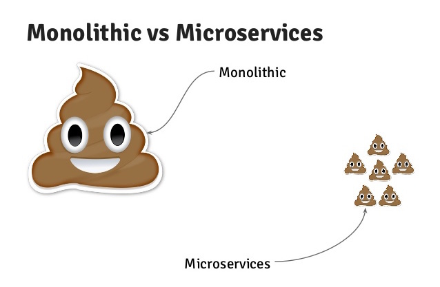
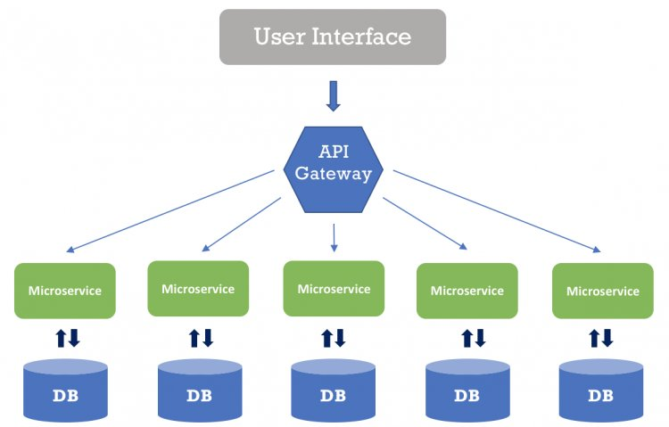

Несколько команд пилят одно большое приложени, что приводит к конфликтам и долгой поставке.
Один и тот же компонент нужен в двух приложениях.
Вынести в либу можно, но дорого и долго обновлять во всех приложениях.
Перезагрузка страницы при переходе между приложениями.
Большой размер бандла.
Распиливаем фронт на части
Какие проблемы хотим решить?
✔️ независимая разработка.
✔️ шареный код.
✔️ автоматическое обновление кода в нескольких приложениях.
✔️ автоматическое обновление кода в нескольких приложениях.
✔️ уменьшить размер основного бандла.
2. Что такое микрофронтенды?
Для начала что такое микросервисы?
Микросервисы – это широко распространенный архитектурный паттерн для разработки, используемый в бекэнде.
Микросервисные системы объединяют небольшие независимо разворачиваемые сервисы, которые запускаются в
разных процессах (машинах) и коммуницируют по сети.
Микросервисы преследуют низкую связность компонентов системы между собой, что дает высокую автономность
командам


Microfrontends – аналогичный архитектурный паттерн для фронтенда, в котором независимо доставляемые
клиентские компоненты в браузер объединяются в единое целое.
⚠️ Но! Зрелость методов и технологий гораздо ниже, чем у микросервисов.
Что дают микрофронтенды?
Упрощение координации задач
– Команды более сфокусированы на своих предметных областях, четкая зона ответственности.
Возможность независимого развертывания
– Позволяет командам быть более автономными.
Сокращение цикла поставки
– Более быстрая сборка и тесты. Как нового функционала, так и исправления ошибок.
Снижение сложности
– Отдельные части меньше и легче для понимания, чем большой сложный монолит.
Изоляция ошибок
– Проще изолировать сбои в отдельных частях приложения, пока остальная часть приложения работает.
Один из самых популярных фреймворков на данный момент для SPA (since 2016).
Тонкий слой оркестровки, который согласно URL запускает тот или иной микрофронтенд, "выключая" предыдущий.
✔️ Клеим что хотим – React, Angular, Vue, Svelte
❌ Погружаемся в systemjs и мапперы, что-то костылим с подгрузкой ассетов css, fonts, images
❌ Одни и те же библиотеки загружаются несколько раз
❌ Cвое обычно бывает очень дорогим (время, поддержка, погружение)
❌ Одни и те же библиотеки загружаются несколько раз
Module Federation
Новая киллер фича в Webpack 5 (since 2020). Позволяет точечно подключать модули из другой webpack-сборки,
которая расположена на другом хосте. Альтернатива systemjs.
Это "адское" обсуждение в 389 комментов, 61 участник с 7 февраля по 7 октября 2020 issue #10352
Зарелизили в октябре 2020 как core-плагин к Webpack 5
Module federation позволяет одному Webpack-приложению динамически подгружать код из другого
Webpack-приложения.
MF это webpack-plugin, который позволяет импортировать chunk'и из стороннего webpack bundle в рантайме.
Все что может сбандлить Webpack (css, images, fonts, ...) с MF может быть зашарено между микрофронтендами.
Грубо говоря, MF позволяет смерджить в рантайме два Webpack manifest'а. И заставить их работать вместе, как
будто вы их скомпилировали с самого начала. (https://webpack.js.org/concepts/manifest/)
✔️ MF может шарить между собой общие зависимости, если совпадает semver.
К примеру если React уже загружен, то он не будет повторно грузиться со стороннего webpack приложения.
✔️ MF могут быть развернуты на разных доменах и деплоиться независимо.
✔️ "Сборка" происходит на лету при запуске приложения в браузере.
Цели приследуемые при разработке MF
Нет перезагрузкам страниц при переходе между MFE
Не грузить vendor code, который уже предоставлен другой Webpack-сборкой (например React)
Каждый MFE может быть standalone (без внешних зависимостей).
Не нужно пересобирать основное приложение, если поменялся shared-модуль (например навигация)
Оркестрация должна происходить на стороне пользователя, позволяя загружать чанки без "умного сервера"
(чтоб спокойно раздаваться с CDN и не только).
Резюме
✔️ у каждого микрофронтенда может быть свой репозиторий
✔️ независимые билды и деплои
✔️ микрофронтенд может быть запущен как standalone SPA
✔️ в браузере всё работает как монолит
5. Архитектура Module Federation
Терминология
Host - (consumers) – бандл который первый инициализировался во время загрузки страницы (корень)
Remote - (consumable) – другой бандл, чьи некоторые части может импортировать "host" (лист)
Omnidirectional host – бандл, который одновременно может быть и "host", и "remote" (внутренний узел)
Terminology
Exposed modules – модули которые будут доступны другим приложением для импорта
Shared modules – модули которые могут быть общими для всего приложения (vendor eg React)
⚠️ (С тестированием пока все сложно) Если поменяете интерфейс выставленного модуля, то ваше приложение сломается. Последствия изменений точно такие же, как если бы вы поменяли схему своего REST API
⚠️ Можно увлечься и наимпортировать вагон интерфейсов и библиотек